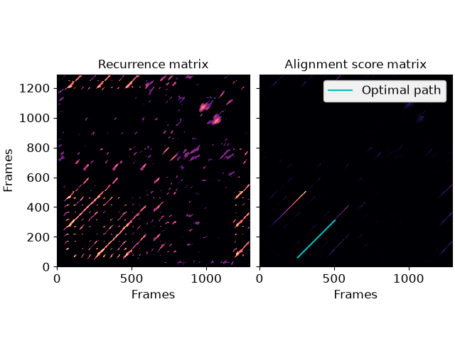
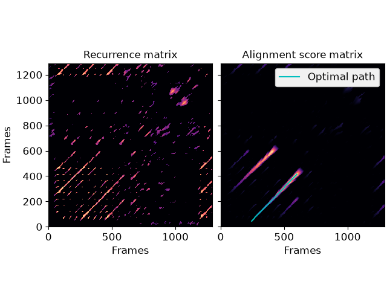

librosa.sequence.rqa
- librosa.sequence.rqa(sim, *, gap_onset=1, gap_extend=1, knight_moves=True, backtrack=True)[source]
Recurrence quantification analysis (RQA)
This function implements different forms of RQA as described by Serra, Serra, and Andrzejak (SSA). [1] These methods take as input a self- or cross-similarity matrix
sim, and calculate the value of path alignments by dynamic programming.Note that unlike dynamic time warping (
dtw), alignment paths here are maximized, not minimized, so the input should measure similarity rather than distance.The simplest RQA method, denoted as L (SSA equation 3) and equivalent to the method described by Eckman, Kamphorst, and Ruelle [2], accumulates the length of diagonal paths with positive values in the input:
score[i, j] = score[i-1, j-1] + 1ifsim[i, j] > 0score[i, j] = 0otherwise.
The second method, denoted as S (SSA equation 4), is similar to the first, but allows for “knight moves” (as in the chess piece) in addition to strict diagonal moves:
score[i, j] = max(score[i-1, j-1], score[i-2, j-1], score[i-1, j-2]) + 1ifsim[i, j] > 0score[i, j] = 0otherwise.
The third method, denoted as Q (SSA equations 5 and 6) extends this by allowing gaps in the alignment that incur some cost, rather than a hard reset to 0 whenever
sim[i, j] == 0. Gaps are penalized by two additional parameters,gap_onsetandgap_extend, which are subtracted from the value of the alignment path every time a gap is introduced or extended (respectively).Note that setting
gap_onsetandgap_extendtonp.infrecovers the second method, and disabling knight moves recovers the first.- Parameters:
- simnp.ndarray [shape=(N, M), non-negative]
The similarity matrix to use as input.
This can either be a recurrence matrix (self-similarity) or a cross-similarity matrix between two sequences.
- gap_onsetfloat > 0
Penalty for introducing a gap to an alignment sequence
- gap_extendfloat > 0
Penalty for extending a gap in an alignment sequence
- knight_movesbool
If
True(default), allow for “knight moves” in the alignment, e.g.,(n, m) => (n + 1, m + 2)or(n + 2, m + 1).If
False, only allow for diagonal moves(n, m) => (n + 1, m + 1).- backtrackbool
If
True, return the alignment path.If
False, only return the score matrix.
- Returns:
- scorenp.ndarray [shape=(N, M)]
The alignment score matrix.
score[n, m]is the cumulative value of the best alignment sequence ending in framesnandm.- pathnp.ndarray [shape=(k, 2)] (optional)
If
backtrack=True,pathcontains a list of pairs of aligned frames in the best alignment sequence.path[i] = [n, m]indicates that rownaligns to columnm.
Examples
Simple diagonal path enhancement (L-mode)
>>> import numpy as np >>> import matplotlib.pyplot as plt >>> y, sr = librosa.load(librosa.ex('nutcracker'), duration=30) >>> chroma = librosa.feature.chroma_cqt(y=y, sr=sr) >>> # Use time-delay embedding to reduce noise >>> chroma_stack = librosa.feature.stack_memory(chroma, n_steps=10, delay=3) >>> # Build recurrence, suppress self-loops within 1 second >>> rec = librosa.segment.recurrence_matrix(chroma_stack, width=43, ... mode='affinity', ... metric='cosine') >>> # using infinite cost for gaps enforces strict path continuation >>> L_score, L_path = librosa.sequence.rqa(rec, ... gap_onset=np.inf, ... gap_extend=np.inf, ... knight_moves=False) >>> fig, ax = plt.subplots(ncols=2) >>> librosa.display.specshow(rec, x_axis='frames', y_axis='frames', ax=ax[0]) >>> ax[0].set(title='Recurrence matrix') >>> librosa.display.specshow(L_score, x_axis='frames', y_axis='frames', ax=ax[1]) >>> ax[1].set(title='Alignment score matrix') >>> ax[1].plot(L_path[:, 1], L_path[:, 0], label='Optimal path', color='c') >>> ax[1].legend() >>> ax[1].label_outer()
Full alignment using gaps and knight moves
>>> # New gaps cost 5, extending old gaps cost 10 for each step >>> score, path = librosa.sequence.rqa(rec, gap_onset=5, gap_extend=10) >>> fig, ax = plt.subplots(ncols=2, sharex=True, sharey=True) >>> librosa.display.specshow(rec, x_axis='frames', y_axis='frames', ax=ax[0]) >>> ax[0].set(title='Recurrence matrix') >>> librosa.display.specshow(score, x_axis='frames', y_axis='frames', ax=ax[1]) >>> ax[1].set(title='Alignment score matrix') >>> ax[1].plot(path[:, 1], path[:, 0], label='Optimal path', color='c') >>> ax[1].legend() >>> ax[1].label_outer()

